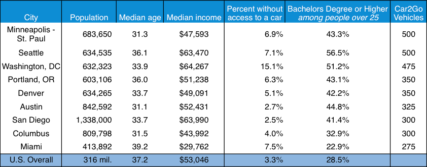

Table
With this table, I attempt to answer the question of who the users of car2go are. By analyzing the demographics of the U.S. cities in which car2go operates, a clear pattern emerges. Most of car2go cities have populations of around 600,000 people, with higher-than-average levels of education and a lower-than-average age.
Notes: Demographic information based on whole cities, though Car2Go typically only operates in part of a given city, typically the densest areas around downtown. Car2Go also operates in a small portion of Los Angeles County; due to dissimilarities between Car2Go boundaries and city boundaries in this area, it was omitted from the table. Median age and median income for Minneapolis-St. Paul shown here are means of the two cities’ medians.
Sources: Population: 2012 Census estimates retrieved through Wolfram Alpha. Median age, median income, educational attainment: 2008-2012 American Communities Survey 5-Year Estimates retrieved through Wolfram Alpha. Car access: 2008-2012 American Communities Survey 5-Year Estimates, table B08203. Number of Car2Go Vehicles: Estimates based on number of cars available for hire in each location based on periodic checks of car2go.com booking page.